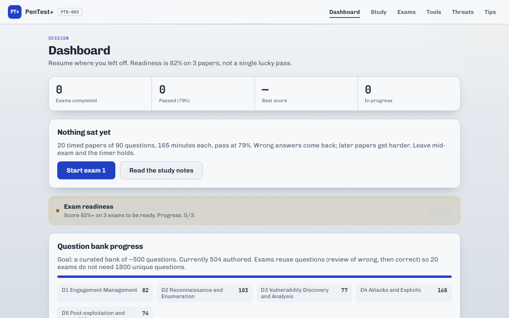

The problem
Certification study happens in the gaps — a break at work, twenty minutes before bed, on a bus with no signal. Every tool I tried wanted an internet connection, an account, and a subscription, and none of them let me stop halfway through a timed paper and come back to it.
What I built
Two modes on the same question bank. Study gives you the answer and the reasoning immediately, one question at a time. Exam is the real thing: a fixed number of questions, a countdown, no feedback until you submit, and a pass mark applied at the end. A grid of question numbers sits alongside so you can see what you have skipped and jump straight back to it — the single feature that made it feel like an exam rather than a quiz.
It is a PWA, so it installs to the home screen and runs with the plane on. That is not a checkbox feature here; the whole point was the bus.
Decision — a timer that tells the truth
A countdown driven by an interval that decrements a number is wrong the moment the browser throttles the tab or the phone sleeps. The clock has to be derived from timestamps, with pauses subtracted, so that being interrupted does not quietly hand you free minutes.
// Remaining time is computed, never accumulated. A backgrounded tab,
// a locked phone or a reload cannot drift it.
const elapsed = (now - startedAt) - pausedTotal;
const remaining = Math.max(0, durationMs - elapsed);The shape of the timer — src/exam/useTimer.js
Decision — the question grid had to survive a phone
Ninety numbered buttons is a comfortable strip on a laptop and a wall of confetti on a phone, pushing the actual question below the fold. On narrow screens the grid becomes its own scroll region with a capped height, and every button gets a 44px minimum so it can be hit with a thumb:
@media (max-width: 760px) {
.q-grid {
grid-template-columns: repeat(auto-fill, minmax(44px, 1fr));
max-height: 232px;
overflow-y: auto;
overscroll-behavior: contain; /* stop the page scrolling with it */
}
}Excerpt — src/App.css
The bug worth writing down
I deployed a fix, reloaded, and saw the old build. Twice. The service worker that makes the app work offline was doing exactly its job: serving the cached version, including the cached stylesheet I had just changed. Offline-first has a cost, and the cost is that "just refresh" stops being true.
Now the cache is versioned and old caches are dropped on activation, and when I
am testing a style change I bypass the worker rather than trusting what I am
looking at. Related lesson from the same session: I was about to report that
keyboard shortcuts were rendering on mobile, checked, and found the CSS already
hid them for coarse pointers — desktop Chrome at a phone width still reports
pointer: fine. Emulated is not the same as real.
What I would do differently
- Version the cache from the first commit. Retrofitting cache invalidation is how you end up debugging a bug you already fixed.
- Separate the questions from the app sooner. The content wants to be data I can edit without touching a component.
- Test on the device. The emulator lies about pointers, fonts and the keyboard, and those are three of the four things that break.
Back to the start